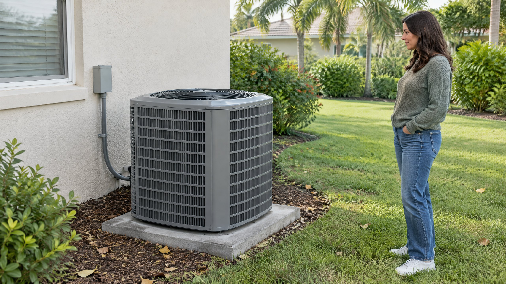

A removable AC cover can look like an easy way to protect equipment when the weather cools. But the decision is not simply whether a product fits over the cabinet. First identify whether the outdoor unit will still run, whether it is a Heat Pump, and what its manufacturer permits.
For Tampa and North Tampa homeowners, a calendar change does not establish that cooling has ended. If your home may still call for cooling on a warm afternoon, treat the outdoor unit as operating equipment rather than an appliance stored until spring. This article answers the cover question, not the full seasonal maintenance checklist.
Should an operating outdoor AC unit be covered?
Do not operate an outdoor unit with a removable storage cover, tarp, or wrap blocking its airflow. Lennox explains that outdoor air conditioners are designed to operate in open air and discourages full covers, particularly airflow-restricting plastic or vinyl. A storage cover is not part of the equipment's normal air path.[2]
In cooling mode, the outdoor coil releases heat removed from the home. Keep its intake and discharge paths open. A cover marketed as breathable is not automatically approved to remain on during operation; check the equipment instructions, not just the cover's sales description. If you cannot establish that a removable cover is compatible with operation, leave it off.
Why is a Heat Pump different from an idle cooling-only unit?
A Heat Pump uses its outdoor equipment for heating as well as cooling, so switching the thermostat to heat does not put that cabinet into winter storage. ENERGY STAR explains that an air-source Heat Pump transfers heat between the home and outdoor air in both seasons. Lennox says Heat Pumps that run year-round should not be covered.[1] [2]
Do not identify a Heat Pump from the cabinet's appearance alone. Look at your equipment paperwork, accessible model information, or ask your HVAC provider. If heating is underperforming, request Heat Pump repair assessment rather than using a cover to try to keep the unit warmer. Do not open the cabinet or alter controls to identify the system.
Could an inactive cooling-only unit need protection?
Limited debris protection is different from wrapping operating equipment. Lennox generally advises against a full cover but identifies falling debris and accumulated leaves as circumstances in which a suitable form of protection may be considered. It emphasizes avoiding restricted airflow. That is a reason to ask about the location and equipment, not a universal instruction to buy a winter cover.[2]
The practical decision is equipment-specific: is a cooling-only unit genuinely out of use, does its manufacturer recommend protection, and can the cover be removed before the next cooling request? Do not apply seasonal-storage guidance to a Heat Pump used for heating or to an AC that may still run. If the instructions are unclear, ask the provider to check the model before purchasing a cover.
Can a full wrap trap moisture or attract pests?
Lennox identifies moisture accumulation, corrosion, and shelter for small animals as potential drawbacks of full covers. These are reasons to avoid assuming that wrapping the cabinet always protects it. They are possible effects, not proof that every covered unit will develop damage.[2]
A cover also cannot tell you whether the coil is clean or the equipment is working correctly. If you notice debris inside the cabinet, damaged panels, unusual noise, or declining cooling, do not hide the condition under a wrap. Arrange an inspection and describe what you observed without removing panels or reaching through the grille.
| Equipment situation | Cover decision | What to confirm |
|---|---|---|
| AC may still run for cooling | Keep removable storage covers off. | Open airflow and model-specific operating clearance. |
| Heat Pump used for heating | Do not wrap or cover the operating unit. | Equipment identity and heating instructions. |
| Cooling-only unit genuinely inactive | Ask whether seasonal protection is recommended. | Approved cover type and removal before operation. |
| Manufacturer-engineered top accessory | Treat it separately from a storage cover. | Exact model compatibility and installation instructions. |
Is a manufacturer-approved top accessory the same as a tarp?
No. An engineered accessory can be designed for particular equipment, while a loose tarp or fitted storage bag is a separate covering. For example, Trane publishes specific kit sizes and supported model families for its WeatherGuard top accessory. That listing does not establish compatibility with your unit or with another brand.[4]
If falling leaves or nearby branches are the concern, ask whether the manufacturer offers an approved option and how it affects required clearance and service access. Do not build a plywood lid, attach material to the fan grille, or assume a homemade enclosure preserves airflow. This is not a recommendation to buy a particular accessory.
What should you do instead of automatically buying a cover?
Keep loose debris and overgrown plants away from the outdoor cabinet without reaching into it. Lennox emphasizes open airflow and recommends cleaning and inspecting the equipment rather than automatically covering it. Use your model's clearance instructions when planning landscaping; this article does not substitute a universal distance for those requirements.[2]
Arrange AC maintenance if the coil condition or operating performance needs attention. ENERGY STAR lists condenser-coil cleaning, electrical-connection checks, and start/run/shutdown control checks as professional maintenance tasks. A cover does not replace them.[3] For the broader schedule, read our Tampa AC maintenance checklist.
If the system stops cooling or makes a new noise after running with a cover, turn cooling off and request an AC repair assessment. Do not keep restarting it to test whether it recovers. Report the cover type and what happened; the history is useful, but it does not diagnose one failed component.
If your question is about operating rather than covering the unit, our AC operation in ordinary rain article separates normal outdoor exposure from lightning, floodwater, and new equipment symptoms. A storage-cover decision does not answer those weather-related operating questions.
Frequently Asked Questions
Can I leave a breathable cover on while the AC runs?
Do not assume breathable fabric makes a storage cover suitable for operation. Keep a removable cover off unless the equipment manufacturer explicitly approves that accessory for the exact model and operating conditions.
Should I cover a Heat Pump when the thermostat is set to heat?
No. The outdoor unit is part of the heating process, not an idle summer appliance. Lennox advises against covering Heat Pumps that operate year-round; keep the outdoor unit's airflow unobstructed.
Will a cover protect my AC from every weather hazard?
No. A seasonal cover is not a guarantee against storm damage, flooding, corrosion, or falling branches. Follow equipment-specific guidance and seek assessment for visible damage rather than assuming covered equipment is unaffected.
What if I do not know whether my outdoor unit is a Heat Pump?
Leave the removable cover off while you check equipment paperwork or ask your HVAC provider to identify the model. The outdoor cabinet's appearance alone is not a reliable way to determine whether it supplies heating.
Sources
[1] ENERGY STAR: Air-Source Heat Pumps. Outdoor-air heat transfer for both heating and cooling; supports the operating-equipment distinction.
[2] Lennox: Should I Cover My AC Unit in the Winter? Full-wrap drawbacks and limited protection considerations; published April 10, 2025.
[3] ENERGY STAR: Maintenance Checklist. Professional condenser-coil, electrical, and equipment-control checks.
[4] Trane: WeatherGuard Top Air Conditioner Accessory. A model-specific engineered accessory, distinct from a removable storage wrap.
Editorial Source Review & Publisher
Prepared for On The Way Heating & Air from the federal and manufacturer references above. This general explanation is not an inspection of your equipment or confirmation that a particular cover fits your model. Equipment identification and the manufacturer's instructions should guide the decision.